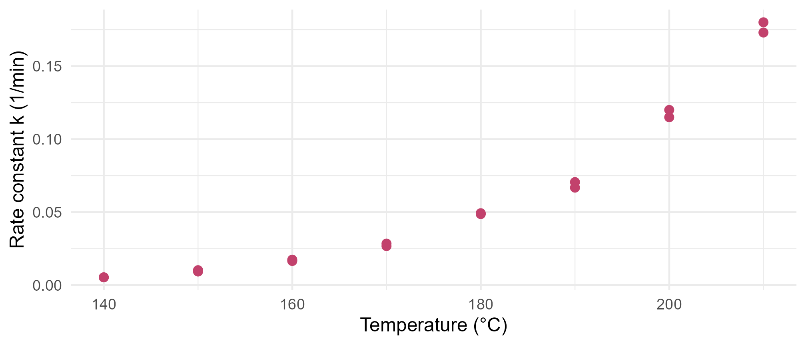
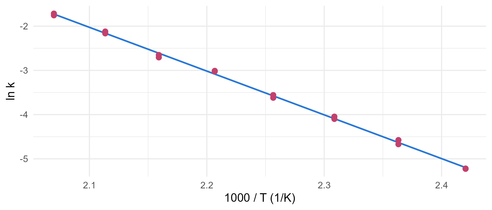
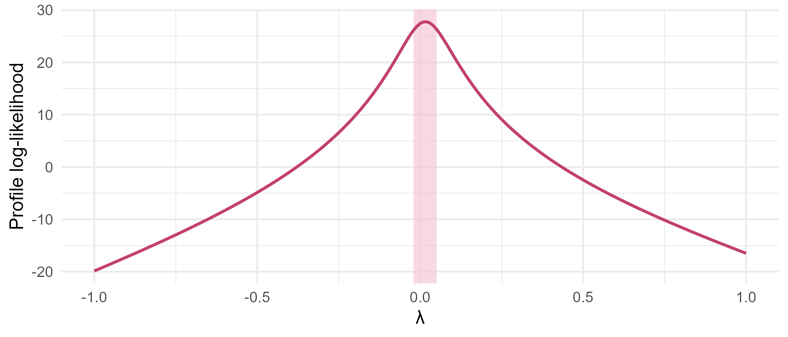

Module 2 · Lesson 9 of 15 Week 39 of 160 About 5–7 hours
Transformations
Logs, powers, curves and weights: making a model fit the data you actually have
Straighten curved relationships with log transformations (Arrhenius kinetics), interpret models on the log scale, let Box-Cox choose a power, add polynomial terms to a calibration curve and a process model, and handle non-constant variance with weighted least squares.
Last lesson’s residuals found curves and funnels. “Linear regression” sounds as if it can only fit straight lines with equal scatter, but it’s more flexible than that. Linear means linear in the coefficients: you can transform the response, transform the predictors, and add squared terms, and it’s still least squares with a design matrix. This lesson shows you the four standard tools, starting with one every chemical engineer already uses.
You’ve probably plotted ln k against 1/T in a reaction-engineering class. Today you’ll find out you were doing regression with a transformation all along!
In this lesson you’ll:
- straighten an exponential relationship with logs, and estimate an activation energy
- interpret coefficients and predictions on the log scale
- let the Box-Cox method choose a power transformation
- add polynomial terms, to a calibration curve and to the process model
- fix non-constant variance with weighted least squares
Arrhenius: logs make it straight
The kinetics lab measured the reaction’s rate constant, k, twice at each of eight temperatures from 140 to 210 °C:
kinetics <- read_csv("data/kinetics.csv", show_col_types = FALSE)
ggplot(kinetics, aes(x = temp_C, y = k_per_min)) +
geom_point(size = 2.2, color = "#C2416C") +
labs(x = "Temperature (°C)", y = "Rate constant k (1/min)") +
theme_minimal(base_size = 12)
The rate climbs faster and faster: a straight line fits it badly (R^2 = 0.85). But you know the law it should follow, the Arrhenius equation:
k = A\, e^{-E_a/(RT)} \qquad\Longrightarrow\qquad \ln k = \ln A - \frac{E_a}{R} \cdot \frac{1}{T},
with T in kelvin and R = 8.314 J/(mol·K). Take logs, and \ln k is a straight line in 1/T, with slope -E_a/R. That’s a simple regression, with a transformed response and a transformed predictor:
kinetics <- mutate(kinetics, inv_T = 1 / (temp_C + 273.15))
fit_arr <- lm(log(k_per_min) ~ inv_T, data = kinetics)
coef(fit_arr)
#> (Intercept) inv_T
#> 18.76305 -9899.49717
ggplot(kinetics, aes(x = 1000 * inv_T, y = log(k_per_min))) +
geom_smooth(method = "lm", formula = y ~ x, se = FALSE, color = "#2a78d6", linewidth = 0.8) +
geom_point(size = 2.2, color = "#C2416C") +
labs(x = "1000 / T (1/K)", y = "ln k") +
theme_minimal(base_size = 12)
The points fall on the line (R^2 = 0.998). The slope is −9,899 K, so E_a = 9899 \times 8.314 = 82{,}300 J/mol, about 82 kJ/mol.
The log helped twice. It straightened the curve, and it evened out the scatter. Rate constants have multiplicative errors: each measurement is off by a few percent, so the absolute errors are tiny at 140 °C and big at 210 °C, a funnel. On the log scale, a 6% error is the same size everywhere. Whenever a variable’s errors scale with its size, a log is the natural first try. (In R, log() is the natural log, ln. Use log10() for base 10.)
Your turn. Compute the activation energy, in kJ/mol, from the slope of fit_arr, and its 95% confidence interval from confint().
Divide by 1000 to turn J/mol into kJ/mol, the same as for the estimate. (The interval’s ends swap places because of the minus sign.)
R <- 8.314
slope <- coef(fit_arr)["inv_T"]
slope_ci <- confint(fit_arr)["inv_T", ]
c(Ea = unname(-slope * R / 1000), lower = unname(-slope_ci[2] * R / 1000), upper = unname(-slope_ci[1] * R / 1000))E_a = 82.3 kJ/mol, with a 95% interval from 80.4 to 84.2 kJ/mol. A transformation plus a confidence interval gives you a physical constant with honest error bars.
Reading a model on the log scale
When the response is logged, the coefficients describe ratios, not differences. If \ln y = b_0 + b_1 x, then raising x by one unit multiplies y by e^{b_1}. For small b_1, that’s roughly a 100 \times b_1 percent change. For example, a fit of \ln k against the temperature in °C, over this range, has a slope of 0.0495 per degree: each degree speeds the reaction up by about e^{0.0495} - 1 = 5.1\%.
| Model | Meaning of the slope b_1 |
|---|---|
| y = b_0 + b_1 x | one more unit of x adds b_1 to y |
| \ln y = b_0 + b_1 x | one more unit of x multiplies y by e^{b_1} (about 100 b_1 percent) |
| y = b_0 + b_1 \ln x | multiplying x by e adds b_1 to y. Doubling x adds 0.69\,b_1 |
| \ln y = b_0 + b_1 \ln x | a 1% increase in x goes with about a b_1% increase in y (an elasticity, or a power law y = a x^{b_1}) |
To predict, work on the log scale, then transform back with exp(). Back-transformed prediction intervals stay valid: if \ln k is inside its interval 95% of the time, so is k. But they’re no longer symmetric, because the log scale stretches small values and squashes big ones.
NoteGo deeper: the back-transformed mean is a median
If \ln Y is normal with mean \mu and standard deviation \sigma, then e^{\mu} is the median of Y, not its mean. The mean of a lognormal variable is e^{\mu + \sigma^2/2}, a little higher, because the exponential stretches the upper tail.
So exp(predict(fit)) estimates the median rate constant at a temperature. For the Arrhenius fit, \sigma = 0.048, and the correction factor e^{\sigma^2/2} is 1.001: a tenth of a percent, which doesn’t matter. With noisier data, say \sigma = 0.5, it would be 13%, and it would matter whenever you need averages, like total production over a year. Then use the correction, or Duan’s “smearing” estimate, which multiplies by the average of the exponentiated residuals instead of assuming normality.
Your turn. How many times faster is the reaction at 200 °C than at 180 °C? Predict \ln k at both temperatures, and take the exponential of the difference.
The difference of two logs is the log of their ratio: log_k[2] - log_k[1].
temps <- tibble(inv_T = 1 / (c(180, 200) + 273.15))
log_k <- predict(fit_arr, newdata = temps)
exp(log_k[2] - log_k[1])2.5 times faster: the old rule of thumb that “reaction rates double for every 10 degrees” is roughly right here, since 1.6 \times 1.6 = 2.5 for the two 10-degree steps. It’s not a law, though: it depends on the activation energy and the temperature.
Box-Cox: let the data choose
Without a physical law to guide you, how do you choose a transformation? The Box-Cox family is a ladder of powers for the response:
y^{(\lambda)} = \begin{cases} \dfrac{y^\lambda - 1}{\lambda} & \lambda \ne 0 \\[2mm] \ln y & \lambda = 0 \end{cases}
\lambda = 1 leaves y alone, \lambda = 0.5 is a square root, \lambda = 0 is the log, and \lambda = -1 is a reciprocal. (The odd-looking form makes the family change smoothly with \lambda, with the log as the limit at 0.) For each \lambda, the Box-Cox method fits the model to the transformed response and computes how likely the data are. MASS::boxcox() computes that profile, and you can draw it with a 95% confidence interval for \lambda. (Fit the model with y = TRUE, which keeps a copy of the response inside it for boxcox() to use.)
bc <- MASS::boxcox(lm(k_per_min ~ inv_T, data = kinetics, y = TRUE), plotit = FALSE, lambda = seq(-1, 1, by = 0.01))
ci <- range(bc$x[bc$y > max(bc$y) - qchisq(0.95, 1) / 2])
ggplot(tibble(lambda = bc$x, loglik = bc$y), aes(x = lambda, y = loglik)) +
annotate("rect", xmin = ci[1], xmax = ci[2], ymin = -Inf, ymax = Inf, fill = "#F4C0D1", alpha = 0.6) +
geom_line(color = "#C2416C", linewidth = 0.9) +
labs(x = "λ", y = "Profile log-likelihood") +
theme_minimal(base_size = 12)
The peak is at \lambda = 0.02, and the interval runs from −0.02 to 0.05: the data ask for a log, just as Arrhenius said. In practice, choose a simple value inside the interval (1, 0.5, 0 or −1) that makes sense to explain, rather than 0.02 exactly.
Three things to know about Box-Cox. It transforms the response only (the kinetics model already used 1/T as the predictor). The response must be positive. And it chooses the power that makes the residuals most normal-looking and the variance most even for that model, so a different set of predictors can ask for a different \lambda.
Your turn. Find the \lambda with the highest profile log-likelihood.
bc$y holds the log-likelihood for each \lambda in bc$x.
bc <- MASS::boxcox(lm(k_per_min ~ inv_T, data = kinetics, y = TRUE), plotit = FALSE,
lambda = seq(-1, 1, by = 0.01))
bc$x[which.max(bc$y)]\lambda = 0.02, practically 0: take logs.
Polynomial terms
Sometimes no transformation is natural, and you just need the line to bend. Add a squared term: y = \beta_0 + \beta_1 x + \beta_2 x^2 + \varepsilon. It’s still a linear model, because it’s linear in the \betas: x^2 is simply another column of X. In R, write it as I(x^2), because inside a formula ^ has a different meaning. The I() says “compute this as arithmetic”.
The calibration curve. Lesson 8 found that the absorbance bends down at high concentrations. A quadratic term lets it:
calibration <- read_csv("data/calibration.csv", show_col_types = FALSE)
fit_q <- lm(absorbance ~ conc_mgL + I(conc_mgL^2), data = calibration)
summary(fit_q)$coefficients
#> Estimate Std. Error t value Pr(>|t|)
#> (Intercept) 4.345280e-03 2.810847e-03 1.545897 1.370673e-01
#> conc_mgL 2.109992e-02 2.871805e-04 73.472692 8.191895e-27
#> I(conc_mgL^2) -3.825203e-05 5.557115e-06 -6.883434 8.389428e-07
anova(fit_q, lm(absorbance ~ factor(conc_mgL), data = calibration))
#> Analysis of Variance Table
#>
#> Model 1: absorbance ~ conc_mgL + I(conc_mgL^2)
#> Model 2: absorbance ~ factor(conc_mgL)
#> Res.Df RSS Df Sum of Sq F Pr(>F)
#> 1 21 0.00081866
#> 2 16 0.00071282 5 0.00010584 0.4751 0.7895The squared term is small but clearly real (t = -6.9), and the lack-of-fit test is now happy (p = 0.79). The intercept, 0.0043, finally agrees with the blanks (0.0052 on average). That was the clue from Lesson 2: the straight line’s intercept, 0.0173, was a symptom of the curve.
The process study. Lesson 8 found an arch in the residuals against temperature, too, along with one run, P066, whose temperature looks wrong. Until Lesson 10 settles P066’s case, let’s set it aside and add a squared temperature term, centered at 185 °C as in Lesson 7:
study <- read_csv("data/process_study.csv", show_col_types = FALSE)
no66 <- filter(study, run_id != "P066")
fit_lin <- lm(yield_pct ~ temp_C * catalyst + residence_min + feed_water_ppm, data = no66)
fit_quad <- lm(yield_pct ~ temp_C * catalyst + I((temp_C - 185)^2) + residence_min + feed_water_ppm, data = no66)
summary(fit_quad)$coefficients["I((temp_C - 185)^2)", ]
#> Estimate Std. Error t value Pr(>|t|)
#> -1.275272e-02 2.189003e-03 -5.825811e+00 5.738707e-08The yield’s rise does flatten at high temperatures. With the curve in the model, the arch in the residuals disappears: the mean residual is within half a point of zero in every temperature band. (And notice that catalyst B’s slope now matches A’s almost exactly, p = 0.92 for the difference. Lesson 10 will explain.)
Where’s the peak? For catalyst A, the fitted curve tops out at about 206 °C, right at the edge of the study, and for C it would be beyond the data. Polynomials are dangerous outside the range of the data: a parabola must come back down eventually, whether the chemistry does or not. Use them to describe a curve where you have data, not to predict where you don’t.
Three rules for polynomial terms:
- Keep the lower terms. A model with x^2 should have x too, or its shape depends on where zero is.
- Center first (or use
poly()): x and x^2 are almost perfectly correlated when x is far from zero, which inflates the standard errors. Lesson 11 shows this. - Rarely go beyond a cubic. High-degree polynomials wiggle wildly between and beyond the data. Lesson 12 shows how they overfit.
Your turn. A sample’s absorbance was 0.462. In Lesson 2, the straight line said 23.2 mg/L. What does the quadratic calibration say? Solve b_0 + b_1 x + b_2 x^2 = 0.462 for x with uniroot(), which finds where a function crosses zero.
The function should be zero where the curve’s prediction equals the measured absorbance, 0.462.
fit_q <- lm(absorbance ~ conc_mgL + I(conc_mgL^2), data = calibration)
gap <- function(x) predict(fit_q, newdata = tibble(conc_mgL = x)) - 0.462
uniroot(gap, interval = c(0, 50))$root22.6 mg/L, against 23.2 from the straight line. That’s a 2.4% difference, which is bigger than the 0.35 mg/L standard error Lesson 3 put on the straight-line result. The line wasn’t just slightly imprecise; it was biased, and its error bars didn’t know it. A high R^2 hid a real error, and the residual plot found it.
Your turn. Test the squared temperature term in the process model with a partial F-test (P066 is set aside, as above).
The linear model is nested in the quadratic one: anova(fit_lin, fit_quad).
no66 <- filter(study, run_id != "P066")
fit_lin <- lm(yield_pct ~ temp_C * catalyst + residence_min + feed_water_ppm, data = no66)
fit_quad <- lm(yield_pct ~ temp_C * catalyst + I((temp_C - 185)^2) + residence_min + feed_water_ppm, data = no66)
anova(fit_lin, fit_quad)F = 33.9, p = 6 \times 10^{-8}: the curve clearly belongs. In practice, it matters most at the top of the range. For catalyst A, the straight line promised 4.9 points from raising the temperature from 195 to 205 °C. The curve says only 1.7.
Weighted least squares
The calibration’s funnel is still there: the quadratic fixed the shape, not the scatter. When you know (or can estimate) how the variance changes, weighted least squares (WLS) uses it. It minimizes
\sum w_i\, (y_i - \hat{y}_i)^2, \qquad w_i = \frac{1}{\sigma_i^2},
so precise observations, with small \sigma_i, get big weights, and noisy ones get small weights. That’s exactly what an analyst would do by instinct: trust the precise standards more. By the Gauss-Markov reasoning from Lesson 4, the right weights give the most precise estimates.
Where do the \sigma_i come from? With replicates, from the data. The triplicates’ standard deviations are rough (three readings each), so it’s better to smooth them: fit a line to the SD against concentration, and use that line’s predictions:
sds <- calibration |> group_by(conc_mgL) |> summarise(sd = sd(absorbance))
sd_fit <- lm(sd ~ conc_mgL, data = sds)
coef(sd_fit)
#> (Intercept) conc_mgL
#> 0.0008564546 0.0002073208
calibration <- mutate(calibration, w = 1 / predict(sd_fit, newdata = calibration)^2)
fit_w <- lm(absorbance ~ conc_mgL + I(conc_mgL^2), data = calibration, weights = w)
summary(fit_w)$coefficients
#> Estimate Std. Error t value Pr(>|t|)
#> (Intercept) 0.0049421653 5.482200e-04 9.014931 1.152928e-08
#> conc_mgL 0.0209602226 1.532365e-04 136.783507 1.808687e-32
#> I(conc_mgL^2) -0.0000349522 4.519530e-06 -7.733593 1.411239e-07The SD grows from about 0.0009 for a blank to 0.011 at 50 mg/L, so the blanks get about 170 times the weight of the top standards. The coefficients barely move. Least squares was unbiased all along. The gain is in the uncertainty: the intercept’s standard error drops from 0.0028 to 0.0005, because the precise low standards now pin it down. And prediction intervals finally get the right shape: to predict, tell predict() the weight of the new observation as well.
Your turn. Compute the WLS model’s 95% prediction interval for a new reading of a 5 mg/L standard, and its width. The OLS quadratic’s interval at 5 mg/L is 0.027 wide.
The new reading’s weight is w_new.
sds <- calibration |> group_by(conc_mgL) |> summarise(sd = sd(absorbance))
sd_fit <- lm(sd ~ conc_mgL, data = sds)
calibration <- mutate(calibration, w = 1 / predict(sd_fit, newdata = calibration)^2)
fit_w <- lm(absorbance ~ conc_mgL + I(conc_mgL^2), data = calibration, weights = w)
new <- tibble(conc_mgL = 5)
w_new <- 1 / predict(sd_fit, newdata = new)^2
p <- predict(fit_w, newdata = new, interval = "prediction", weights = w_new)
p[, "upr"] - p[, "lwr"]0.0094, about a third of the OLS interval’s 0.027. At 45 mg/L, it goes the other way: the WLS interval is 0.052 wide, against OLS’s 0.028. OLS gave every concentration the same, average-sized interval: too wide at the bottom and too narrow at the top. WLS gets both ends right.
Challenge round
Challenge 1 · A half-life from Arrhenius. For a first-order reaction, the half-life is t_{1/2} = \ln 2 / k. Use the Arrhenius fit to predict k at 160 °C, and compute the half-life in minutes.
The model predicts \ln k, so transform back with exp(log_k).
log_k <- predict(fit_arr, newdata = tibble(inv_T = 1 / (160 + 273.15)))
k_160 <- exp(log_k)
log(2) / k_160k = 0.0167 per minute, so the half-life is 41.5 minutes. At 180 °C, it would be about 15 minutes. (Strictly, e^{\widehat{\ln k}} estimates the median k, but with \sigma = 0.048, that makes no practical difference.)
Challenge 2 · Transforming the response to a rate law. For the first-order batch reaction from Lesson 1, X = 1 - e^{-kt}, so -\ln(1 - X) = kt: a straight line through the origin. Fit it to the conversion data, with no intercept, to estimate k. Use only the samples after time 0 with a conversion below 90%: near full conversion, 1 - X is tiny, and the log blows up its measurement noise.
0 + removes the intercept, as in Lesson 2’s line through the origin.
early <- filter(conversion, time_min > 0, conversion_pct < 90)
fit_k <- lm(-log(1 - conversion_pct / 100) ~ 0 + time_min, data = early)
coef(fit_k)k = 0.0452 per minute, from the 9 early samples. With all the samples, you’d get 0.0499: the near-complete conversions at the end, magnified by the log, pull it up. A transformation changes the error structure too, so check where it makes the noise explode. This run was at 180 °C, and the Arrhenius fit predicts 0.0458 there, so two completely separate experiments agree to within about 1%.
Quick quiz
1. Why does \ln k against 1/T give a straight line for rate constants?
\ln k = \ln A - (E_a/R)(1/T). Theory chose the transformation, and the slope estimates -E_a/R.
2. In a model for \ln y, a coefficient is 0.05. What does a one-unit increase in that predictor do?
On the log scale, adding b means multiplying by e^b on the original scale.
3. The Box-Cox interval for \lambda runs from 0.3 to 0.7. Which transformation would you use?
Pick a simple value inside the interval: 0.5, the square root. 0 (log) and 1 (none) are both outside it.
4. Why write I(x^2) in a formula instead of x^2?
In formulas, ^ builds interactions: (a + b)^2 means a + b + a:b. I() protects arithmetic from that.
5. A quadratic fits a yield curve well between 170 and 205 °C, and peaks at 206 °C. What should you be careful about?
The data say the curve flattens. They say little about what happens beyond 206 °C. More runs up there would settle it.
6. What does weighted least squares do with the noisiest observations?
Precise observations get more say. The estimates stay unbiased, and their standard errors and prediction intervals become right for each observation.
Wrap-up
Your models can now bend and weigh! Here’s what you’ve learned:
- Linear means linear in the coefficients. Transformations and polynomial terms are just new columns of X.
- Logs straighten multiplicative relationships and even out multiplicative errors. Arrhenius: \ln k = \ln A - (E_a/R)(1/T) gave E_a = 82.3 \pm 1.9 kJ/mol.
- Interpreting logs: a coefficient in a log-y model is a multiplicative effect, e^{b}. Back-transform predictions with
exp(). They estimate the median. - Box-Cox (
MASS::boxcox()) chooses a power of the response. Pick a simple value in its interval. - Polynomials:
I(x^2)bends a line. It fixed the calibration’s lack of fit (the unknown is 22.6 mg/L, not 23.2) and the process study’s arch. Keep the lower terms, center, and don’t extrapolate. - Weighted least squares (
lm(..., weights = )) handles known non-constant variance, with w_i = 1/\sigma_i^2. Smooth the variances first, and givepredict()the new weights.
TipPractice in RStudio (optional, about an hour)
Download kinetics.csv, calibration.csv and conversion.csv into your project’s data-raw/ folder.
- Nonlinear least squares. Fit the Arrhenius equation directly, without logs:
nls(k_per_min ~ A * exp(-Ea / (8.314 * (temp_C + 273.15))), data = kinetics, start = list(A = 1e8, Ea = 80000)). Compare E_a with the log-scale fit. Why are they slightly different? (Think about which errors each one minimizes.) - First-order kinetics, nonlinearly. Fit
nls(conversion_pct ~ 100 * (1 - exp(-k * time_min)), data = conversion, start = list(k = 0.05))to all the samples. Does it need you to drop the late ones? - poly(). Fit the calibration with
poly(conc_mgL, 2)instead ofconc_mgL + I(conc_mgL^2). The coefficients differ, but the fitted values are the same. Why? Look up “orthogonal polynomials”. - Your own Box-Cox. Fit the yield of the March batches (
batches.csv) against residence time, and runMASS::boxcox()on it. Does it ask for a transformation?
NoteKey words from this lesson
- Transformation
- Replacing a variable by a function of it, like \ln y or 1/x, to straighten a relationship or even out the variance.
- Multiplicative error
- An error proportional to the size of the measurement, like “±6%”. Logs turn it into an additive, constant-size error.
- Elasticity
- In a log-log model, the percentage change in y for a 1% change in x.
- Box-Cox transformation
- The family of power transformations (y^\lambda - 1)/\lambda, with the log at \lambda = 0, and a likelihood method for choosing \lambda.
- Polynomial regression
- A linear model with powers of a predictor, like x and x^2, as columns.
- Weighted least squares
- Least squares in which each squared residual is multiplied by a weight, usually 1/\sigma_i^2, so that precise observations count more.
- Activation energy
- In the Arrhenius equation, the energy barrier E_a that sets how strongly a reaction rate depends on temperature.
NoteWant to read more?
- Penn State STAT 501, Lesson 9: Data Transformations and Lesson 13: Weighted Least Squares & Logistic Regressions. Transformations, polynomial terms and weighting, with examples.
- NIST/SEMATECH e-Handbook of Statistical Methods, “Weighted least squares regression”. When and how to weight, from an engineering point of view.
- H. Scott Fogler, Elements of Chemical Reaction Engineering, chapter 7, “Collection and analysis of rate data”. The integral and differential methods for finding rate laws, which use exactly these transformations.